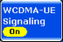
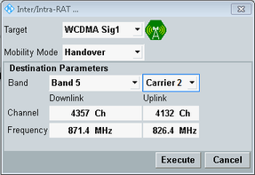

The individual connection states are controlled via the ON | OFF key, via hotkeys and via the UE.
The available hotkeys depend on the current connection state. Below all possible hotkeys are described.
For background information, refer to "Connection States".

The ON | OFF key is used to turn the DL signal transmission on or off. The current state is shown by the softkey. The signal transmission can be switched off any time, independent of the current connection state. A yellow sandglass symbol indicates that the signaling generator is turned on or off.
The state "RDY" means that the signaling application is ready to receive an inter-RAT handover from another signaling application (e.g. from LTE). This state is initiated by the application acting as source of the handover.
While the DL signal is on, the signaling application provides a trigger signal, see "Trigger Signals".
Remote command:Any interaction with a UE requires a WCDMA downlink signal (cell). When the signal is available (state ON, no sandglass), connection control hotkeys appear in the hotkey bar. The available hotkeys depend on the current connection state which is visualized in the "Connection Status" panel of the "WCDMA Signaling" view.
The possible hotkeys are described in the following tables.
Hotkey | Description |
|---|---|
Connect Voice/Video/SRB | Initiate a CS connection setup. The instrument pages the UE. When the UE answers paging, the transitory state "Call Setup in Progress" is reached. When the UE starts ringing, the connection state "Alerting" is reached. When the connection is accepted, at the UE the CS connection state changes to "Call Established". |
"Connect Test Mode" | Initiate a test mode connection in the CS domain. If the HSPA test mode is enabled and the test mode procedure is "...HSPA 34.108", set up also an HSPA test mode connection in the PS domain. |
"Connect Cell FACH" | Initiate the signaling connection using CELL_FACH state without the allocation of dedicated traffic channel. Tests are defined in 3GPP TS 34.108 and 34.121. |
"Connect HSPA TM" | Initiate an HSPA test mode connection in the PS domain. |
"Disconnect Voice/Video/SRB" | Release the connection and return to the previous connection state, e.g. "Registered". |
"Disconnect Test Mode" | If established, release the HSPA connection. Then release the test mode connection in the CS domain. Return to the previous connection states, e.g. "Registered" and "Attached". |
"Disconnect HSPA TM" | Release the HSPA test mode connection and return to the previous connection state, e.g. "Attached". If a test mode connection in the CS domain has been established, it remains established. |
"Unregister" | Unregister the UE completely (CS unregister and PS detach), i.e. change to state "Off". Afterwards the UE can attempt a new registration / attach or initiate a connection setup. This feature can be useful if the UE is replaced without switching the WCDMA DL signal off. |
"Send SMS" | Send an SMS message to the UE. |
"Inter/Intra-RAT..." |
Hotkey | Description |
|---|---|
"Connection Setup On" | Switch on the reduced signaling connection. Then, the downlink signal contains also dedicated physical channels and (if enabled) shared physical channels like during an established connection. The configured RF input connector is active and an uplink signal can be received. Please note that for HSPA test mode direction = HSPA ("Direction") the enabled HSDPA and HSUPA downlink channels are only present when the R&S CMW has successfully completed synchronization to the UL signal. |
"Connection Setup Off" | Switch off the reduced signaling connection. Then, the downlink signal contains only common channels and synchronization channels. The configured input connector is deactivated. |
The hotkey opens a dialog for selection and configuration of the handover destination and initiation of the handover. As a prerequisite for a handover, a connection must be established.

- Transitions within the signaling application in both CS and PS domain per carrier, e.g. to another operating band
- Transitions to another signaling application
The two signaling applications must use different RX/TX modules. If they use the same RF path, an error message is displayed, indicating that blind handover is not supported. Exception is a handover to GSM, where one TX/RX is sufficient. - Transitions to another instrument
For a detailed step-by-step description of a handover, see "How to perform an outgoing handover".
This parameter selects the handover destination. For a redirection to another instrument, select "No Connection" as target.
The cell icon indicates the cell state of the currently selected destination. When you select another signaling application, e.g. "GSM Sig1", the destination cell is switched on automatically and the target cell state changes to "Ready for Handover" (RDY).
Remote command:This parameter selects the mechanism to be used.
Handover is supported within one R&S CMW only, redirection is applicable also to another instrument as a target. Handover and redirection are not selectable in CS registered or PS attached state?
Cell change order is a network initiated cell reselection, while the UE is in PS attached or connected mode. Cell change order is not selectable during CS connection. Cell change order is only supported to the GSM signaling as a target.
For a description of the mobility modes, see "Mobility Management".
Remote command:The "Destination Parameters" display current settings of the selected signaling application target, typically operating band and channels. For intra-RAT handover with multi-carrier, the affected carrier is also specified. You can modify these settings before starting the handover.
For a redirection to another instrument, the "External Destination Parameters" are displayed instead (radio access technology and typically operating band and channel). Configure them according to the actual configuration of the other instrument. There is no communication between the two instruments, so the settings at both instruments must match.
The commands listed here are relevant for redirection to another instrument.
For a handover to another signaling application in the same instrument, use the commands provided by the signaling application target. There are no special handover commands for this purpose.
Please note that the operating band and channels of the currently used WCDMA signaling application can be reconfigured directly. It is not required to open the handover dialog for that purpose.
Remote command:To initiate a handover with the configured settings, press the "Execute" button.
Remote command: